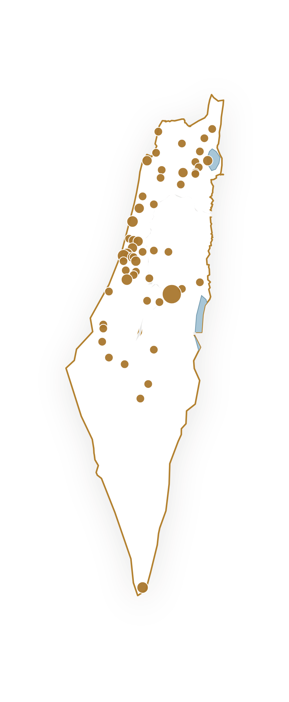

פסנתר רחוב · STREET PIANO

פסנתר רחוב · STREET PIANOCADENZA מתמחה זה למעלה מעשור בפיתוח, ייצור, התקנה ותחזוקה של פסנתרי רחוב המיועדים להצבה קבועה במרחב הציבורי ובתנאי חוץ. לאורך השנים הצבנו למעלה מ־100 פסנתרים בישראל ובעולם, ואנו מעניקים ליווי מלא – משלב התכנון וההתאמה, דרך ההתקנה ועד לשירות ולתחזוקה לאורך שנים.

פתרון ייחודי המאפשר לכל אדם לעצור, לנגן ולהפוך את המרחב הציבורי לחי, מזמין ומלא השראה. הפסנתרים תוכננו במיוחד לעבודה רציפה במרחב הציבורי, תוך שילוב של הנדסה מתקדמת, עמידות יוצאת דופן ועיצוב מוקפד.

שישה יתרונות שהופכים פסנתר רחוב לנכס עירוני שמעשיר את הקהילה ומחזק את תדמית הרשות לאורך שנים.
מוקד פעילות במרחב הציבורי שמושך תושבים ומבקרים.
חיבור בין התושבים סביב חוויה מוזיקלית משותפת במרחב הפתוח.
פעילות תרבותית לכל גיל, ללא עלות, בלב המרחב.
שדרוג הנראות והאווירה בכיכרות, פארקים וטיילות.
מחזק את תדמית הרשות ומעודד שהייה במרחב.
מוצר אמין ועמיד, עם שירות ותחזוקה לאורך שנים.



ועוד עשרות רשויות, מועצות אזוריות ומוסדות ציבור
רכישת פסנתר הרחוב והפיכתו לנכס קבוע של הרשות.
הפסנתר מסופק במסגרת הסכם שכירות תקופתי וגמיש.
מודל מימוני נוח הפורס את העלות לאורך זמן.
המודל המתאים, תנאי ההתקשרות והצעת המחיר יותאמו לצורכי הרשות לאחר פגישת היכרות ואפיון.